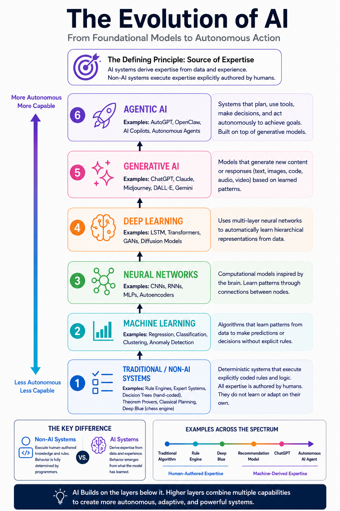

Move 37
In March 2016, AlphaGo, an AI system built by Google DeepMind to play the ancient board game of Go, faced Lee Sedol, a South Korean professional then ranked among the world's strongest players, in a five-game match in Seoul.
Game two. Move 37. AlphaGo placed a stone on the fifth line of the board, well outside the established positions of play. Every expert watching the broadcast assumed it was a mistake. Professional commentators paused. Lee Sedol left the room to collect himself.
It was not a mistake. Move 37 is now considered one of the most creative moves in the recorded history of the game. No human player had ever attempted it in that context. AlphaGo had not been programmed to play it. The move emerged from the system's own analysis, derived from millions of self-played games, not from any rule a programmer ever wrote.
That is what AI does. It derives expertise. And that distinction matters enormously when evaluating what qualifies as artificial intelligence and what does not.
The Definition
Merriam-Webster defines artificial intelligence as "the capability of computer systems or algorithms to imitate intelligent human behavior." That is a useful starting point, but it does not draw a clear boundary between systems that mimic the outputs of intelligence and systems that genuinely develop intelligence from data.
The conventional picture of AI depicts a nested hierarchy: artificial intelligence as the broad category, machine learning as a subset within it, and deep learning as a further specialization. This taxonomy appears in textbooks, vendor presentations, and most introductory explanations of the field. It is not wrong exactly, but it is incomplete in a way that creates real confusion.
The problem is what the taxonomy groups together. Under this framing, MYCIN, a 1970s medical diagnosis program that applied if-then rules written by physicians, and a modern large language model trained on hundreds of billions of tokens, occupy the same category. They do not belong there together. One is an elaborate lookup table with a medical vocabulary. The other derives an understanding of language and reasoning from data at a scale no human could have encoded. Calling both "AI" conflates the filing cabinet with the analyst.
A more precise definition: Artificial Intelligence is a computational system whose expertise is machine-derived rather than explicitly authored by humans.
The word "computational" removes any implication that the form of the system matters. Code is the implementation, not the defining characteristic. An engine is an engine whether it runs on gasoline, diesel, or hydrogen. What defines it is what it does, not how it is built. Similarly, what defines AI is how its expertise is acquired, not the language it was written in or the hardware it runs on.
The Test
That definition produces a single, clear test.
Was the expertise in this system written by a human, or derived by a machine?
If a human engineer wrote the rules, conditions, thresholds, and logic that govern the system's behavior, the system is software. It is automation. It may be impressive and useful, but it is not AI.
If the system derived those patterns from exposure to data, and its behavior reflects knowledge that no programmer explicitly encoded, it is AI.
This is not a question of how complex the system is. A rule engine with ten thousand conditions is still a rule engine. Complexity does not produce intelligence. The source of the expertise is what determines the classification.
Why Classical Systems Do Not Pass
With that test in hand, the historical record of systems labeled "AI" tells a different story than the one usually told.
| System | Human-authored knowledge? | Learns / derives knowledge? | Decisions beyond explicit programming? | AI? |
|---|---|---|---|---|
| Traditional algorithm | 100% | No | No | No |
| Business rule engine | 100% | No | No | No |
| Decision tree (hand-written) | 100% | No | No | No |
| Expert system | 100% (domain experts) | No | No | No |
| MYCIN | 100% (medical rules from physicians) | No | No | No |
| SHRDLU | 100% (grammar, blocks world, planning rules) | No | No | No |
| STRIPS planner | 100% (operators, goals, search rules) | No | No | No |
| Chess engine (classical) | Rules, evaluation function, and heuristics are human-authored | No | Searches possibilities | No |
| IBM Deep Blue | Human evaluation + brute-force search | No | No | No |
| Theorem prover | Axioms and inference rules are human-authored | Derives logical consequences, but no new external knowledge | Borderline | Borderline |
| Recommendation model (ML) | Objective is human-authored | Yes | Yes | Yes |
| Fraud detection model | Objective is human-authored | Yes | Yes | Yes |
| Image classifier | Objective is human-authored | Yes | Yes | Yes |
| Large language model | Training objective is human-authored | Yes | Yes | Yes |
| Diffusion model | Training objective is human-authored | Yes | Yes | Yes |
| AI Copilot | Uses learned models | Yes | Yes | Yes |
| Agentic AI (e.g. OpenClaw) | Uses learned models plus planning | Yes | Yes | Yes |
| Autonomous rover using AI | Same as above with physical actuators | Yes | Yes | Yes |
The pattern is consistent. Every system in the No column shares one characteristic: a human wrote the expertise. The rules, the evaluation functions, the inference logic, the clinical decision trees -- all of it was authored by domain experts and encoded by engineers. These systems execute knowledge. They do not develop it.
The systems in the Yes column share the opposite characteristic. The objective may have been specified by a human (minimize loss, maximize reward, predict the next token), but the expertise that emerges from training was not. A recommendation model does not apply rules about what users enjoy. It derives patterns of preference from behavior at scale. A large language model was not programmed with grammar rules. It derived that understanding from data, producing coherent, contextually appropriate text across an essentially unbounded range of topics.
The Borderline case is instructive. A theorem prover operates on axioms and inference rules that are human-authored, but it derives consequences from those axioms that no human specified. It surfaces an important nuance: the distinction is not always binary. There is a spectrum, and the question is where a given system sits on it. But for most of what has historically been called "AI," the answer is unambiguous.
The Business Example
Consider how this distinction plays out in a concrete business context. A company wants to improve how it sets prices for customers.
Classical approach: rule-based pricing
if customer_tier == "premium" and days_since_purchase < 30:
discount = 0.15
elif customer_tier == "standard" and cart_value > 100:
discount = 0.10
else:
discount = 0.00Every condition in this block was written by a pricing analyst. The system executes the analyst's judgment. Change the market, and someone has to update the rules. The expertise lives in the code, authored by a human.
Machine learning approach: derived pricing
model = PricingModel.load("pricing_v4")
discount = model.predict(customer_features, context_features)The model was trained on millions of historical transactions and their outcomes. It has derived a pricing function that accounts for day of week, browsing session behavior, device type, regional patterns, time since last purchase, and hundreds of other signals. No analyst wrote those relationships. They emerged from the data. The expertise is machine-derived.
Both systems automate a pricing decision. Only one developed its own expertise. That is the difference this definition is designed to make precise.
A Better Map
The AI field has produced a wide and growing set of systems that pass this test. The diagram below maps the modern landscape of AI tools and systems, organized by function and capability.

The Modern AI Landscape, organized by category and capability. All systems shown derive their expertise from data rather than from explicitly authored rules.
Understanding which systems belong on this map matters for anyone building or evaluating AI implementations. The distinction is not academic. Deploying a rule engine and calling it AI creates a false expectation that the system will improve over time, adapt to new patterns, and handle situations its designers did not anticipate. It will do none of those things. Rules do not learn.
Robots Are Not AI
One of the most durable misconceptions in public discourse about AI is the identification of AI with robots. The image of AI, in films, journalism, and common usage, is often a humanoid machine. That image is almost always wrong.
Whether a robot is AI depends entirely on how it works, not on the fact that it moves.
A robot in an automotive factory executing a precisely programmed sequence of welds is not AI. Every movement was scripted by engineers. It performs the same sequence in the same order for every unit on the line. It does not adapt. It does not learn. It is sophisticated automation.
A robot whose movements are governed by a policy derived through reinforcement learning, one that has learned to navigate novel environments, grasp irregular objects, or compensate for unexpected physical conditions, is AI. Its competence was derived from experience, not authored by a programmer.
The robot is hardware. The intelligence, when it exists, is in how the system acquired its behavior.
Conclusion
Eight of the eighteen systems in the table above pass the test. Nine do not. One sits at the borderline. Those nine, including some of the most celebrated programs in the history of computer science, were never AI by this definition. They were software: very sophisticated software, built by talented engineers, solving real problems. But software.
Move 37 could not have been authored. No human player would have made it because no human's expertise would have produced it in that position. It emerged from a system that derived its knowledge through a fundamentally different process. That is the difference the conventional taxonomy fails to capture, and that this definition is built to make precise.
Classical AI was never artificial intelligence. It was automation with an ambitious name.